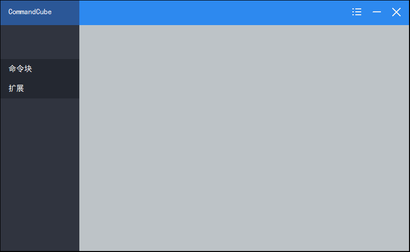
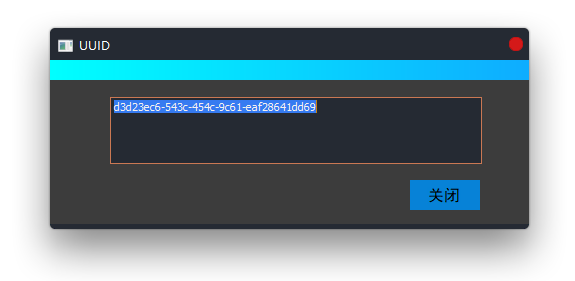

下载CommandCube
这是CommandCube,一个Minecraft开发者工具.
特性
1.原创功能集成,微妙而简单.
一切从一个exe开始.Minecraft开发者的小工具,当然是永久免费的啦qwq

2.快速生成UUID
"gen uuid"命令可以快速生成适用于MC资源包的唯一标识符,无限,简洁,实用.

3.快速生成资源包清单
"build manifest"命令可以快速生成适用于MC资源包的清单文件,告别繁琐和复杂.
返回主站
支持的运行环境
Windows:7/8/8.1/10 | Linux:请使用wine的运行库(不推荐在Linux运行)